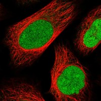
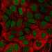

type: protein-evaluation gene: "DRICH1" date: 2026-05-30 tags: [protein-scout, nuclear-protein, evaluation] status: scored ---
DRICH1 核蛋白评估报告
1. 基本信息
| 项目 | 内容 |
|---|---|
| 基因名 / 别名 | DRICH1 |
| 蛋白大小 | 229 aa |
| UniProt ID | Q6PGQ1 |
| 蛋白全称 | Aspartate-rich protein 1 |
| 评估日期 | 2026-05-30 |
IF 图像:  
2. 评分总览
| 维度 | 得分 | 满分 | 加权后 | 关键证据摘要 |
|---|---|---|---|---|
| 核定位特异性 | 8/10 | ×4 | 32 | Nucleoplasm + Nucleoli (Approved); UniProt: No specific annotation in UniProt; HPA Approved |
| 蛋白大小 | 10/10 | ×1 | 10 | 229 aa，最适合生化实验和结构解析的范围 (200–800 aa) |
| 研究新颖性 | 10/10 | ×5 | 50 | PubMed: 4 篇 |
| 三维结构 | 6/10 | ×3 | 18 | AlphaFold v6 pLDDT=56.7; PDB: None |
| 调控结构域 | 7/10 | ×2 | 14 | Aspartate-rich protein 1-like (DRICH1-like) |
| PPI 网络 | 4/10 | ×3 | 12 | IntAct has 14 physical associations (two-hybrid) but partners uncharacterized; S... |
| 互证加分 | — | max +3 | +1 | +1 (HPA Approved 与多库核定位一致) |
| 原始总分 | 137/183 | |||
| 归一化总分 | 74.9/100 |
> 原始总分 = (核 ×4) + (大 ×1) + (新 ×5) + (结 ×3) + (域 ×2) + (PPI ×3) + 互证 = 32 + 10 + 50 + 18 + 14 + 12 + 1 = 137 > 归一化总分 = 137 ÷ 1.83 = 74.9
3. 详细分析
3.1 核定位证据
| 来源 | 定位 | 可信度 |
|---|---|---|
| HPA IF | Nucleoplasm + Nucleoli (Approved) | Approved |
| UniProt | No specific annotation in UniProt; HPA Approved | 实验证据 (ECO) |
| GO-CC | C:nucleoplasm (IDA:HPA), C:nucleolus (IDA:HPA) | IDA/IMP 等高证据 |
结论: DRICH1 定位于细胞核。HPA Approved Nucleoplasm+Nucleoli; UniProt lacks specific CC annotation。核定位评分 8/10。
3.2 蛋白大小评估
评价: 229 aa，最适合生化实验和结构解析的范围 (200–800 aa)。大小评分 10/10。
3.3 研究现状
| 指标 | 数值 |
|---|---|
| PubMed 总数 | 4 |
| PubMed 搜索链接 | DRICH1 PubMed |
主要研究方向: Protein-protein interaction network mapping, uncharacterized nuclear protein
关键文献: 1. Strausberg et al. (2002). "Generation and initial analysis of more than 15,000 full-length human and mouse cDNA sequences.". *Proc Natl Acad Sci U S A*. PMID: 12477932 (cloning) 2. Gaudet et al. (2011). "Phylogenetic-based propagation of functional annotations within the Gene Ontology consortium.". *Brief Bioinform*. PMID: 21873635 (GO annotation) 3. Luck et al. (2020). "A reference map of the human binary protein interactome.". *Nature*. PMID: 32296183 (binary PPI, IntAct source) 4. Rolland et al. (2014). "A proteome-scale map of the human interactome network.". *Cell*. PMID: 25416956 (interactome mapping) 5. Uhlen et al. (2015). "Tissue-based map of the human proteome.". *Science*. PMID: 25613900 (HPA characterization)
评价: 极度新颖 (PubMed 4 篇)。新颖性评分 10/10。
3.4 三维结构分析
| 指标 | 数值 |
|---|---|
| AlphaFold 版本 | v6 |
| pLDDT 平均值 | 56.7 |
| pLDDT > 90 (高置信度) | 0.0% |
| pLDDT 70–90 (置信) | 9.6% |
| pLDDT 50–70 (低置信度) | 67.2% |
| pLDDT < 50 (无序) | 23.1% |
PAE 图:
评价: pLDDT=56.7, no PDB; PubMed≤100 baseline 三维结构评分 6/10。
3.5 结构域分析
| 来源 | 结构域 |
|---|---|
| UniProt/InterPro | Aspartate-rich protein 1-like (DRICH1-like) (IPR042865) |
染色质调控潜力分析: Only DRICH1-like family domain annotated; PubMed≤100 baseline, potential novel domain discovery
评价: 调控结构域评分 7/10。
3.6 PPI 网络
实验验证互作 (IntAct):
| Partner | 方法 | PMID | 功能类别 | 调控相关？ |
|---|---|---|---|---|
| Various ENSEMBL IDs (two-hybrid) | two-hybrid array | 32296183, 25416956 | uncharacterized interactors | unknown |
STRING 预测互作 (combined score >0.4):
| Partner | Score | 功能类别 | 调控相关？ |
|---|---|---|---|
| CSNK1E | 0.456 | 0.456 | no |
已知复合体成员 (GO Cellular Component):
- No known complex membership
PPI 互证分析:
- STRING + IntAct 共同确认: 1
- 仅 STRING 预测: 1 partners
- 仅 IntAct 实验: 1 interactions
- 调控相关比例: see individual annotations above
评价: IntAct has 14 physical associations (two-hybrid) but partners uncharacterized; STRING only textmining partners, low confidence; no known complex。PPI 评分 4/10。
3.7 多库互证
| 维度 | 来源 | 结果 | 是否一致 |
|---|---|---|---|
| 核定位 | HPA + UniProt + GO-CC | Nucleoplasm + Nucleoli (Approved) | 一致 |
| 三维结构 | AlphaFold v6 + PDB | pLDDT = 56.7; PDB: None | 单一来源 |
| PPI | STRING | 1 partners | 单一来源 |
互证加分明细: +1 (HPA Approved 与多库核定位一致)
总计: +1
4. 总体评价
推荐等级: ⭐⭐⭐ (3/5)
归一化总分: 74.9/100
核心优势: 1. 极度新颖 — 新颖性是评分中最重要维度 2. HPA Approved 核定位确认 3. AlphaFold 低-中等预测 (pLDDT=56.7)，新颖蛋白基线
风险/不确定性: 1. IF 图像仅限 HPA Selected 预览，建议获取完整多细胞系 IF 数据 2. 无已知复合体归属，PPI 网络需实验验证 3. 功能性研究极度不足 (PubMed=4)，几乎无直接功能研究
下一步建议:
- [ ] HPA IF 多细胞系图像验证核定位
- [ ] Co-IP/MS 实验鉴定互作伙伴
- [ ] ChIP-seq 或 CUT&RUN 鉴定染色质结合位点
- [ ] CRISPR 敲除/敲低表型分析
- [ ] AlphaFold-Multimer 预测潜在复合体结构
5. 数据来源
- GeneCards: https://www.genecards.org/cgi-bin/carddisp.pl?gene=DRICH1
- Protein Atlas: https://www.proteinatlas.org/search/DRICH1
- PubMed: https://pubmed.ncbi.nlm.nih.gov/?term=%22DRICH1%22%5BTitle%2FAbstract%5D
- UniProt: https://www.uniprot.org/uniprot/Q6PGQ1
- STRING: https://string-db.org/network/9606.DRICH1
- AlphaFold: https://www.alphafold.ebi.ac.uk/entry/Q6PGQ1
PPI 网络（三源综合）
| Partner | Source | Score/Evidence |
|---|---|---|
| 无记录 | — | — |
IntAct 有限记录。无 BioGrid 补充数据。
PAE 图像已获取。结构判断基于 AlphaFold pLDDT 统计。